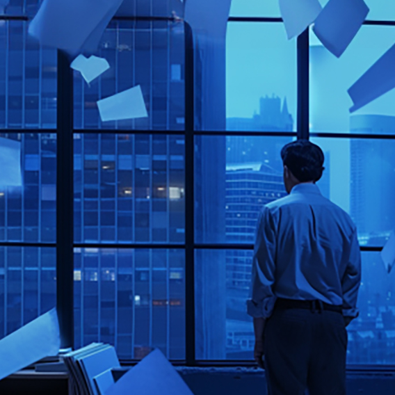
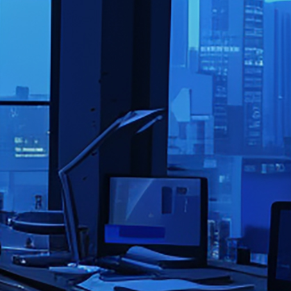
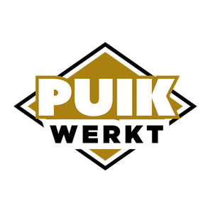
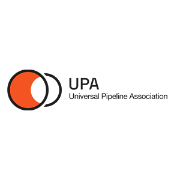
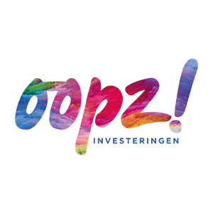

Als je even het administratieve overzicht kwijt bent…
… ik ben er voor je.
Susanne Meilgaard
Susanne Meilgaard is het hart achter BlauweZaken, een plek waar ondernemersdromen met open armen worden ontvangen én ondersteund.
Susanne is meer dan alleen de oprichter; ze is een steun en toeverlaat die begrijpt hoe overweldigend 'blauwe zaken' kunnen zijn.
Haar passie ligt in het brengen van rust en orde, op de reis naar succes.
Met een luisterend oor en een hart vol geduld, zet Susanne zich in om samen met jou een pad van helderheid en groei te in te slaan.
Administratieve Ondersteuning:
Van dagelijkse taken tot complexe uitdagingen, je krijgt de steun die je nodig hebt om elke dag met een schone lei te beginnen.
Zeg vaarwel tegen administratieve chaos. Plan vandaag nog jouw gratis strategiegesprek!

Financiële Begeleiding:
Je financiën worden met een verfijnde touch en volledige transparantie beheerd, waardoor je altijd weet waar je aan toe bent.
Geef die blauwe enveloppen maar aan mij! Boek je eerste sessie en ervaar direct meer gemoedsrust.

Organisatorische Structurering:
Je werkplek en processen worden zo ingericht dat ze jou optimaal ondersteunen, waardoor je efficiënt en met plezier aan de slag kunt.
Ben je klaar om je te focussen op wat echt belangrijk is? Laat BlauweZaken je organisatie stroomlijnen.
"Gemoedsrust"
"Ik wist niet hoeveel stress mijn administratie en financiën me gaven tot ik de hulp van BlauweZaken inschakelde. Nu alles onder controle is, kan ik me concentreren op wat ik het liefste doe, wetende dat de rest in capabele handen is. De gemoedsrust die dat geeft, is onbetaalbaar."



Bij BlauweZaken draait alles om het creëren van een omgeving waarin jij als ondernemer kunt bloeien. Door een diepgaand begrip van jouw behoeften te combineren met een toegewijde aanpak, is het doel om je te bevrijden van die tijdrovende administratieve taken.
Zo krijg jij de ruimte om je te concentreren op wat echt belangrijk is:
je passie najagen.
Laten we samenwerken aan jouw administratie, het ordenen van organisatie structuren. Kortom het creëren van overzicht.
Neem vandaag nog contact op,
en zet de eerste stap naar een zorgeloze toekomst waarin jouw bedrijf de aandacht krijgt die het verdient.